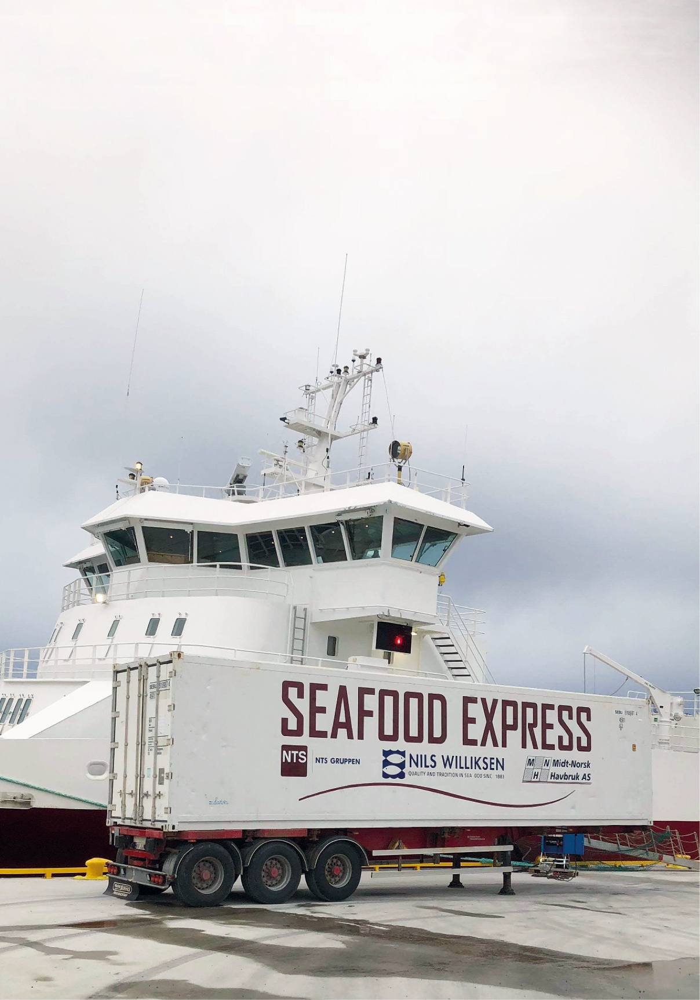

laksenæringen i regionen øke og gi
en dobling av laksetransporten i
Midt-Norge de kommende år, vil
det være en betydelig belastning
for veinettet i området. Tidligere i
år gikk derfor også oppdrettere,
rederier og transportører, havner
og offentlige myndigheter i Midt-
Norge sammen i «Tenketank Midt-
Norge Sjø», for å teste ut sjø-
transport som alternativ til las-
tebil. Dette for å unngå framtidig
trafikkaos, og redusere klima- og
miljøutslipp. Begge nevnte rederier
er medlemmer i tenketanken.
Grønt Kystfartsprogram
•
Grønt Kystfartsprogram er et partnerskapsprogram mellom det private og det
offentlige. Programvisjonen er at Norge skal etablere verdens mest effektive og
miljøvennlige kystfart drevet helt eller delvis med batterier, LNG eller andre
miljøvennlige drivstoff.
•
Norsk innenriks skipsfart står for 9 % av Norges samlede CO2-utslipp, 34 % av
Norges NOx-utslipp og 25 % av Norges SOx-utslipp. Dersom Norge skal nå
klimamålet om 40 % reduksjon av klimagassutslipp innen 2030 (sammenlignet
med 1990-nivået), må også skipsfarten i Norge omstilles. Det er i programmet
opprettet fem pilotprosjekt som skulle se på muligheter
for å redusere utslipp i
norske farvann og bidra til at norsk innenriks skipsfart blir mer miljøvennlig.
•
Medlemmene i programmet er: Kystrederiene, Norges Rederiforbund, ABB,
NHO Sjøfart, DNV GL, Risavika Havn, Corvus, Flora kommune, GMC, Maritime
Battery Forum, Teekay Shipping Norway, Kongsberg Maritime, Energi Norge, KS
Bedrift, Echandia, Torghatten, NOx-fondet, Seatrans.
Lossing:
Kontainer med laks vel
fremme hos kunde i
Nederland etter
pilottest.
Foto: NTS.